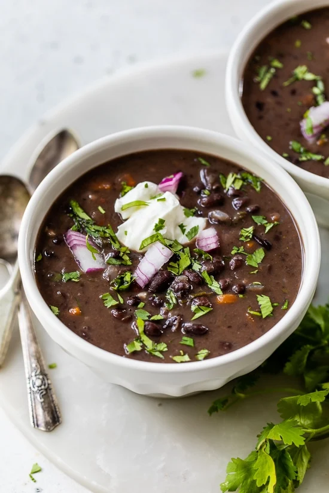

Black Bean Soup - Recipe

Description
This scrummy black bean soup with bacon bits is great for a cold winter evening.
When served with crunchy baguette and sour cream it rounds of the meal perfectly
Ingredients
- 1 pack diced bacon
- 1 onion
- 1 garlic clove
- 4 cans black beans (drained)
- 500ml Chicken Broth
- 1 can chopped tomatos
- Chilli powder
- Worcestershire sauce
- tomato ketchup
- lime juice
Steps
- Fry up the bacon in a pot
- After cooked, add onions and cook until translucent (4 minutes)
- Add garlic and cook 4 more minutes
- Add Chili powder, Worcestershire sauce, and a dollop of ketchup
- Add chicken broth and stir
- Add Tomatoes and Black Beans
- Simmer for about 15 - 20 minutes
- Add lime and cilantro to taste
- Serve with sour cream or creme fraiche